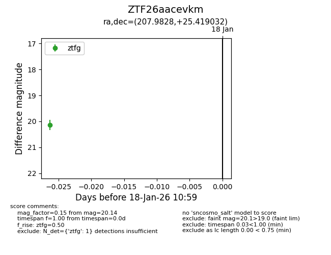
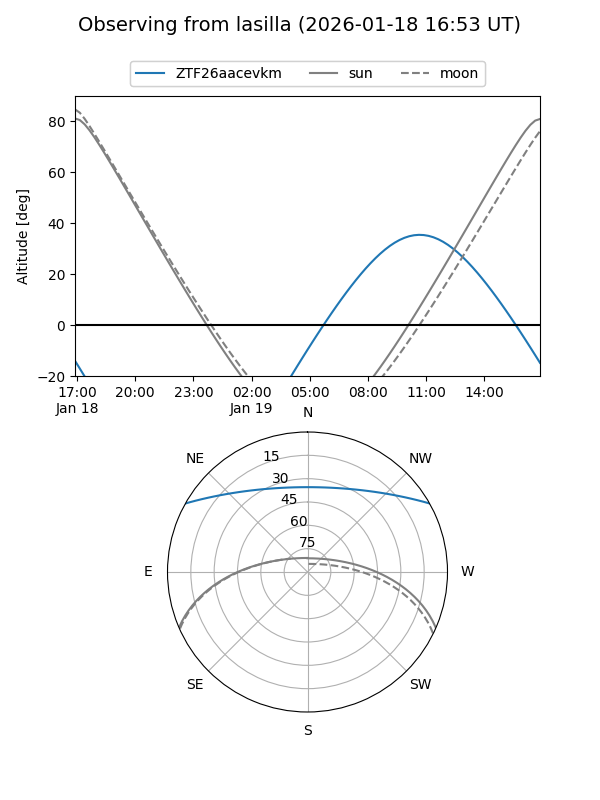
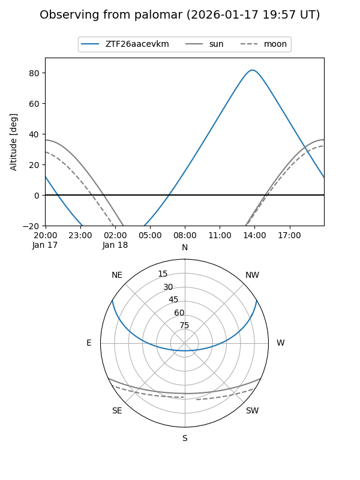

ZTF26aacevkm
Target ZTF26aacevkm at 2026-01-18 11:00
Aliases and brokers:
FINK: link
Lasair: link
ALeRCE: link
alt names
ZTF26aacevkm (ztf,fink_ztf)
Coordinates:
equatorial (ra, dec) = 207.9828,+25.41903
equatorial (HMS+DMS) = 13:51:55.87,+25:25:08.52
galactic (l, b) = (29.1531,+76.34033)
Flags:
Photometry:
last ztfg=20.14
1 ztfg detections
Lightcurve

Visibility


Additional plots